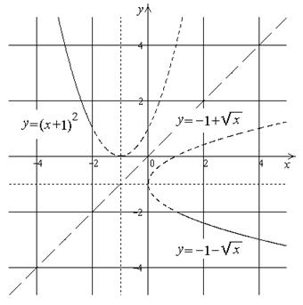

П 14.№16.
Найдите функцию, обратную функции при
.
РЕШЕНИЕ:
, ,
.
При функция монотонно убывает, значит,
существует обратная.
Выразим  через
через  , учитывая, что .
, учитывая, что .
через , учитывая, что .Получим:
, .
Поменяем местами и .
и ., ,
.

Область определения и область значений исходной и обратной
функции меняются местами. Графики функций симметричны относительно прямой  .
.
.Ответ: